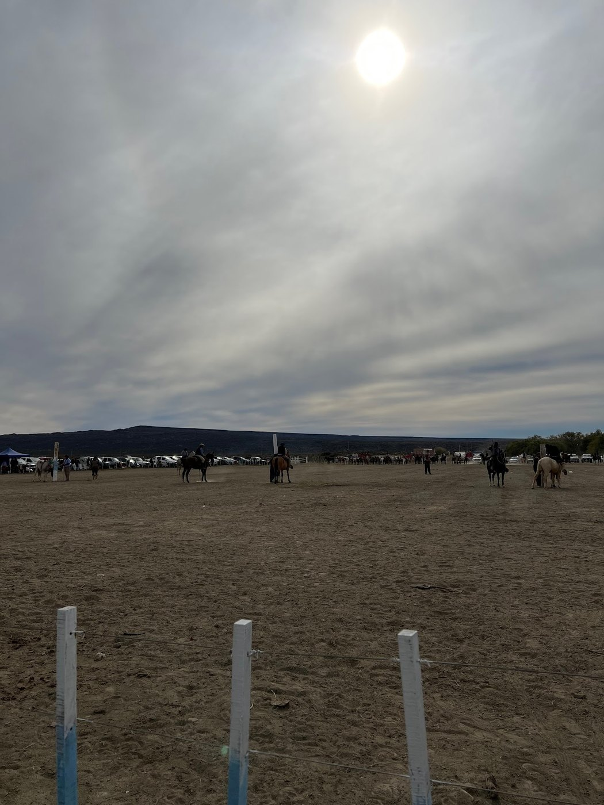
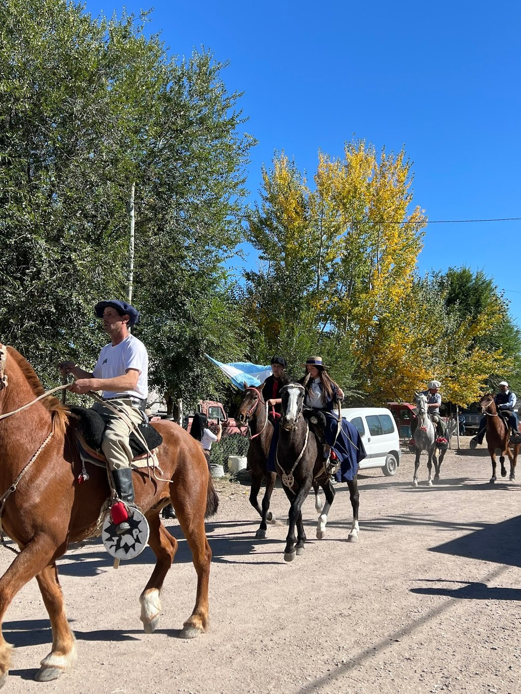

¿Cómo se celebra el aniversario en tu paraje?
En la localidad de Comicó, todos los años se celebra el Aniversario de Comicó, una festividad tradicional que conmemora un año más de vida del paraje. Generalmente, los festejos se llevan a cabo durante dos días, sábado y domingo, y reúnen a los habitantes de la comunidad y a personas que llegan de otros lugares para compartir y disfrutar de las distintas actividades.
El primer día: acto, desfile y almuerzo
Durante el primer día se realiza un acto protocolar y un desfile en el que participan las instituciones del paraje y diferentes puestos, con jinetes que desfilan a caballo. También se organiza un almuerzo popular para compartir entre los presentes, donde se acostumbra comer carnes tradicionales de la zona, como cordero, vaca y potro.
Bingos, destrezas y baile campero
A lo largo de la jornada se realizan bingos y destrezas criollas en la cancha de doma, donde se ponen en valor las costumbres y habilidades propias de la tradición rural. Por la noche, la celebración continúa con un baile campero, acompañado por orquestas regionales que interpretan chamamé y cumbia campera, géneros muy presentes en este tipo de encuentros.
El domingo, día de doma
El domingo generalmente se lleva a cabo la doma, una de las actividades centrales de la celebración, que convoca a vecinos y visitantes. Con esta actividad se da por finalizado el aniversario.
El Aniversario de Comicó es una celebración muy importante para la comunidad, ya que permite reunirse con familiares, amigos y vecinos, compartir comidas y momentos de alegría, y mantener vivas las tradiciones, la cultura y la identidad del paraje. Además, es una oportunidad para celebrar su historia y fortalecer los vínculos entre sus habitantes.



